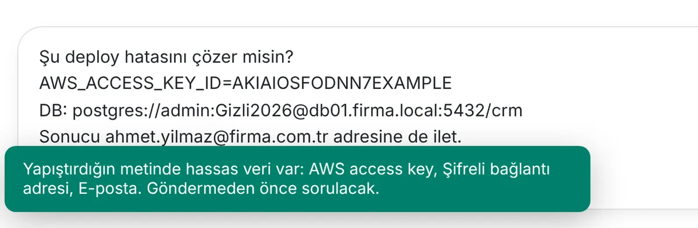
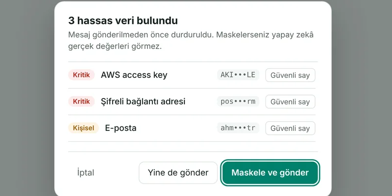
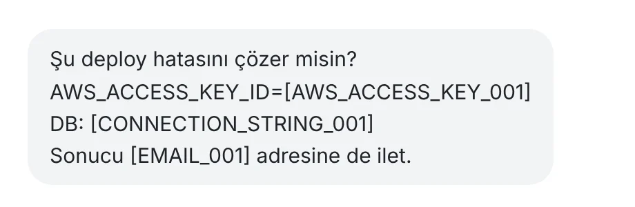

Kimlik ve iletişim
9 tipBir kişiyi doğrudan tanımlayan bilgiler. TC kimlik numarası doğrulama hanesiyle kontrol edilir.
- TC kimlik no
- Telefon
- E-posta
- Açık adres
- Pasaport no
- Kimlik kartı seri no
- Doğum tarihi
- Araç plakası
- IP adresi
TypeShield, ChatGPT, Claude, Gemini gibi yapay zekâ araçlarına gönderdiğin mesajdaki TC kimlik no, IBAN, şifre ve API anahtarlarını sen Enter'a basmadan yakalar ve maskeler. Yapay zekâ işini yapar, gerçek veriyi görmez.
Bu deneme sayfada çalışır, yazdığın hiçbir yere gönderilmez. Eklenti daha fazla veri tipini tanır.
Ayrı bir uygulama açmana ya da alışkanlığını değiştirmene gerek yok. Yapay zekâyı her zamanki gibi kullanırsın.



Kişisel verilerden (PII) API anahtarına, şirket içi sunucu adlarına kadar. Kimlik, IBAN ve kart numaraları doğrulama algoritmasıyla kontrol edilir; rastgele bir sayı alarm vermez.
Bir kişiyi doğrudan tanımlayan bilgiler. TC kimlik numarası doğrulama hanesiyle kontrol edilir.
Banka, kart ve resmi kayıt numaraları. IBAN ve kartlar algoritmayla doğrulanır, tutarlar alarm vermez.
Kod, .env dosyası ya da hata logu yapıştırılırken en sık sızan bilgiler.
Gizlilik etiketli belgeler, iç altyapı bilgileri ve KVKK'da özel korunan sağlık verisi.
Her uyarıda sorabilir, sormadan maskeleyebilir ya da hiçbir hassas verinin maskelenmeden gitmesine izin vermeyebilirsin.
Bir gizlilik aracının kendisi veri toplamamalı. Tarama tamamen tarayıcında yapılır.
Kurumsal sürümü ilk şirketlerle birlikte geliştiriyoruz. Pilot programa katılan şirketler ücretsiz kullanır.
Kendi bilgisayarında yapay zekâ kullanan herkes için
Kredi kartı yok, hesap yok.
Eklentiyi ekleNeler var
Yapay zekâ kullanımı için hafif bir DLP katmanı arayan şirketler için
Pilot programa katılan ilk şirketlere ücretsiz.
Pilot için başvurBugün
Pilotla birlikte geliyor
Her iki sürümde de reklam yok, veri satışı yok. Yazdığın metni hiçbir zaman görmeyiz.
TypeShield her sürümde biraz daha fazlasını koruyor. Sırada bunlar var.
Yönetici paneli, merkezden kurallar, çalışanların kapatamadığı koruma ve her ay hazır KVKK raporu.
Pilot için başvur →Yapay zekâya yüklediğin PDF, Word ve Excel dosyalarındaki hassas veriyi de gönderilmeden yakalar.
Bulut servisleri, sunucular ve geliştirici araçlarına ait yeni anahtar türleri düzenli olarak eklenir.
Chromium tabanlı olmayan tarayıcılar ve yeni çıkan yapay zekâ araçları da korumaya katılır.
Aklında bir özellik mi var? Bize yaz, listeyi birlikte şekillendirelim.
Hayır. Tarama tarayıcında, eklentinin içinde yapılır. Mesajın, bulunan değerler ya da ayarların hiçbir sunucuya gönderilmez. Eklentinin bağlandığı bir sunucumuz yok.
ChatGPT, Claude, Gemini, Copilot, Perplexity, DeepSeek, Grok ve Mistral'da çalışır. Yeni bir araç eklendiğinde eklenti kendiliğinden güncellenir, senin bir şey yapmana gerek kalmaz.
Evet. Etiketler [TCKN_001] gibi anlamlı olduğu için yapay zekâ metnin ne dediğini anlar. Aynı değer metinde birkaç kez geçerse hep aynı etiketi alır, bağlantı kaybolmaz.
Hayır. TC kimlik no, IBAN ve kart numaraları doğrulama algoritmasıyla kontrol edilir. Tutarlar, sipariş numaraları ve örnek adresler filtrelenir. Yine de gereksiz uyarı alırsan o değeri "güvenli" işaretleyebilirsin.
Hayır. Tarama sadece metin yapıştırdığında ve gönder'e bastığında yapılır, göz açıp kapayıncaya kadar biter. Arka planda sürekli çalışmaz, desteklenen yapay zekâ siteleri dışındaki sayfalara hiç dokunmaz.
Evet. Ayarlardan korumayı tamamen kapatabilir ya da tek bir mesaj için "Yine de gönder" diyebilirsin. Katı modda ve "Engelle" kuralı olan veri tiplerinde bu seçenek bilerek gösterilmez.
Evet, yapay zekâ kullanımına odaklanmış hafif bir DLP (veri sızıntısı önleme) katmanıdır. Kişisel verileri (PII), finansal verileri, şifre ve API anahtarlarını ve şirket içi bilgileri tespit eder; senin seçimine göre uyarır, maskeler ya da engeller. E-posta, dosya ya da ağ trafiğini izleyen kurumsal DLP çözümlerinin yerini almaz. Sadece yapay zekâ araçlarına yazılan metne odaklandığı için ajan ya da sunucu kurulumu gerektirmez, dakikalar içinde devreye alınır.
TypeShield, kişisel verilerin yapay zekâ hizmetlerine gönderilmesini önleyen teknik bir tedbirdir. Tek başına KVKK uyumu sağlamaz. Şirketinin politikaları ve hukuki süreçleriyle birlikte düşünülmelidir.
Bireysel sürüm ücretsiz kalacak. Gelirimiz şirketlere sunacağımız kurumsal sürümden gelecek. Reklam göstermiyoruz, veri satmıyoruz. Zaten elimizde satılacak bir veri yok.
Şimdilik yazdığın ve yapıştırdığın metni korur. Yüklenen dosyaları taramak yol haritamızda.
Chrome Web Mağazası'ndan ücretsiz kurabilirsin; sayfanın en üstündeki "Eklentiyi ekle" butonu seni doğrudan oraya götürür. Chrome'un yanında Edge, Brave, Opera ve Vivaldi gibi Chromium tabanlı tarayıcılarda da çalışır. Edge'de mağazanın üstünde çıkan "Diğer mağazalardan uzantılara izin ver" düğmesine, Opera'da ise önce "Install Chrome Extensions" eklentisine ihtiyaç var.
Bu uyarıyı tarayıcısında "Gelişmiş Güvenli Tarama" açık olanlar görür. Eklentide bir sorun olduğu anlamına gelmez; Google yeni yayıncılara birkaç aylık bir güven süresi uyguluyor ve bu süre dolunca uyarı kendiliğinden kalkar. "Yüklemeye devam et" ile kurabilirsin.
Yeni özellikler ve sürümler için e-postanı bırak. Şirketler için ücretsiz pilot programına da buradan başvurabilirsin.